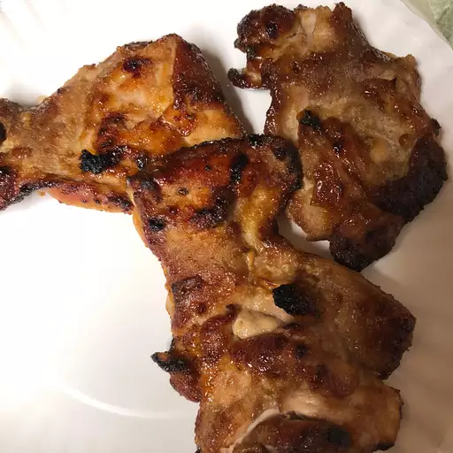

Teriyaki Chicken

This dish is one of the delicacies that Japan is proud of as a fast-food which is both tasty as well as cheap for the entire mass of people to afford.
This is what some would say as the nations favourite.
Ingridents:
- 1 (3 pound) whole chicken, cut in half
- ¾ cup granulated sugar
- ¾ cup soy sauce
- 1 tablespoon grated fresh ginger
- 2 cloves garlic, minced
Directions
- Rinse chicken halves, and pat dry with paper towels. Place chicken cut side down in a 9x13 inch baking dish.
- In a medium mixing bowl, combine sugar, soy sauce, grated ginger and garlic. Mix well, and pour mixture over chicken. Cover and refrigerate for at least 3 hours.
- Preheat oven to 350 degrees F (175 degrees C).
- Bake chicken uncovered in the preheated oven for 1 hour, basting frequently. Test for doneness, making sure there is no pink left in the meat. Let cool slightly, then cut into smaller pieces to serve.